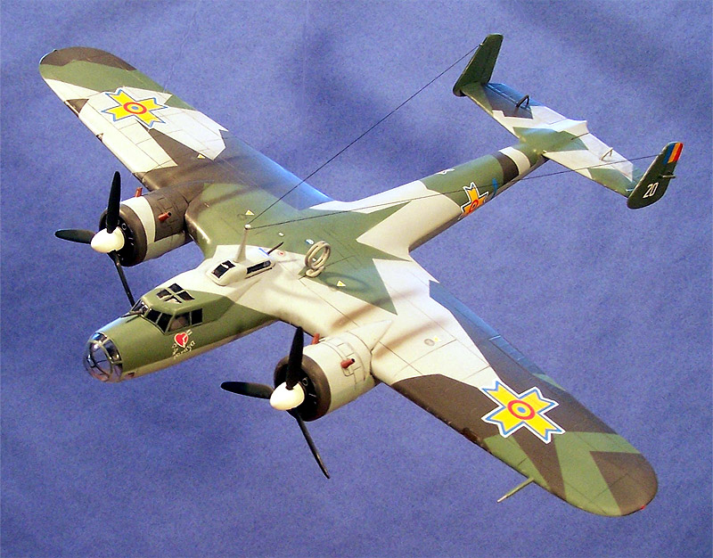
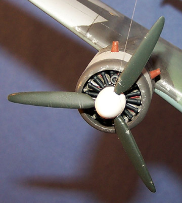
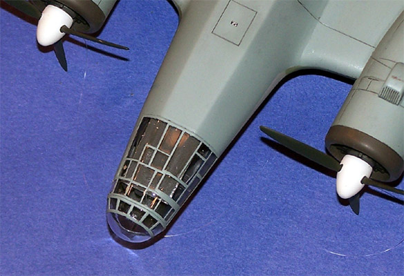
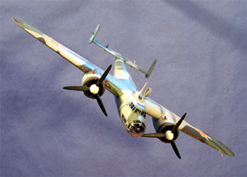
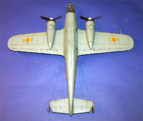
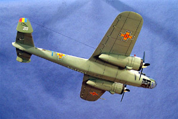
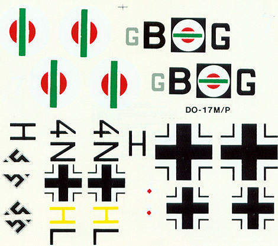
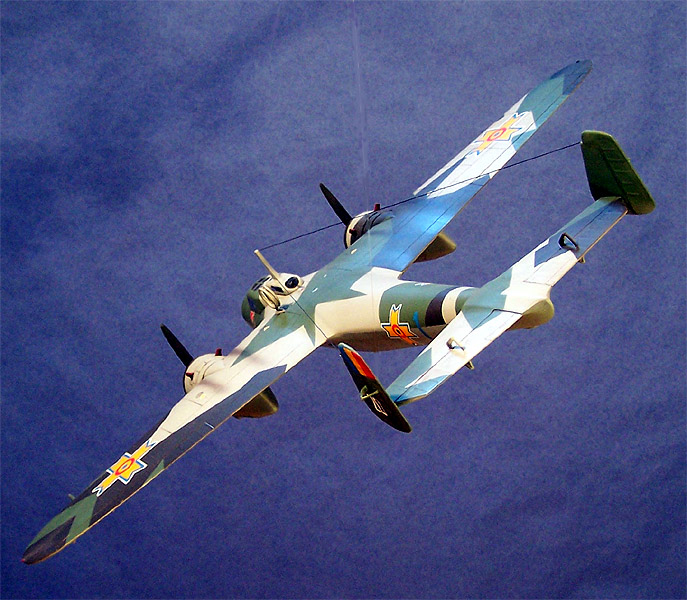
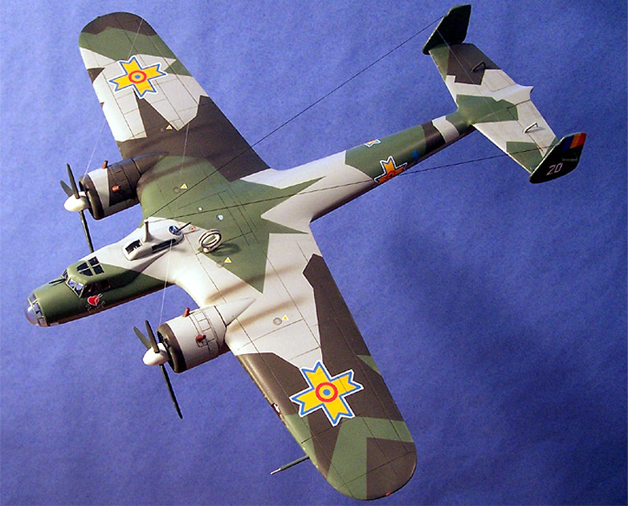

{kind=link}
{kind=link}
{kind=link}


Hobby Craft 1/48 Dornier Do-17M/P

Kit #1603 MSRP $24.98
Images and text Copyright © 2005 by Matt Swan
Developmental Background
Dornier constructed a number of aircraft that were later to be dubbed the "Flying Pencils" due mainly to the long thin outline of the fuselage. Probably the most famous, and the one that was to take part in the “Battle of Britain” was the Do-17. Developed in the early 1930s this aircraft was quite advanced for its time and was also the predecessor of the Do-217 series of bombers and reconnaissance aircraft. The first flight of the Do-17 was on November 23rd 1934 as a passenger/courier aircraft but Lufthansa rejected it and the prototypes were left in a hangar, only to be discovered a few years later by Robert Untucht who was the air ministry liaison officer, and a test pilot with Lufthansa.
The early 17s saw an evolution of BMW engines through 1936 resulting in a BMW 132N 9 cylinder radial producing 1000 horsepower each being installed. This variant, the M bomber type and P reconnaissance type could reach a top speed of 292 mph at 14,800 feet. It made its mark in the attack on Poland in September 1939 and its versatility was such that the Luftwaffe used it as a bomber, reconnaissance plane and as a pathfinder. Its limitations were shown in the “Battle of Britain” where it was outclassed typically eight guns to one. It could still sometimes outrun the Hurricanes in a slight dive but the days where it could run away from its opponents were coming to and end. The Z variant was the type used over Britain with the Bramo Fafnir 323P engine, which only had good performance at lower altitudes. In an attempt to compensate for this terrain-following mass raids were employed which worked fairly well. Even then the Do-17's were butchered over England; for all the trouble spent developing the Do-17, the Luftwaffe was probably better off without it.
While the M and P versions were the most common types utilized during the Spanish Civil War there were many alternative engine combinations researched in the Z variant. Some were built with 1,050-horse power Daimler Benz DB.600G inverted V motors while a few others were fitted with Hispano engines or the new 323P version of the Bramo Fafnir 9-Cylinder radial rated at 1,000hp each. Modifications of the basic Z-2 model included the Z-3 reconnaissance version, the Z-4 dual-control trainer, and the Z-5 which included float cells in the fuselage and engine nacelles in case it was forced down on water. Some 537 Z-2's were produced before the lines shut down in July 1940. The type was withdrawn from service in 1941 and surviving units were handed off to other Axis member nations.
 
The Kit
If you want to model a Dornier Do-17 in 1/48 scale there are not a lot of choices open to you. Hobby Craft released the Do-17M/P kit several years ago and while nice to have does have some issues. The kit comes in a very large box with somewhat cartoonish box art. Inside we have few parts to work with, the basic wing and fuselage pieces along with a handful of detail pieces. The first of the obvious shortfalls of the kit is the poor cockpit. It is sorely out of scale and really bears no resemblance to the real thing. If you are going to build this in any mode where the interior is examinable you’ll want to scrap the kit interior and scratch build something from reference.
The exterior pieces display nice engraved panel lines and other than one serious error a good aircraft outline. The one error here is a definite banana bow to the fuselage. This is not a peculiarity of my kit but is common to all the Hobby Craft Do-17 kits. If you are concerned about accuracy the fuselage needs to be cut behind the trailing edge of the wing and before the tail plane in order to straighten it out. It’s not all bad though, the kit parts fit together well and the clear parts, while a little on the thick side do clear up nicely with some Future and fit the model well. The landing gear could use to be better detailed but are passable. The kit consists of seventy-two parts done in high-pressure light gray polystyrene and seven clear parts for seventy-nine pieces in the box.



You may click on these small images to view larger pictures
Decals and Instructions

The instructions for the kit consist of a single large tri-fold sheet. The cover contains a very brief historical background on the aircraft in five languages followed by three panels of exploded view construction steps. There are no interior painting instructions anywhere to be seen here nor are there any construction notes. The last two panels cover decal placement and exterior painting instructions. Here at least we have some basic color codes by RLM number only.
The decals are not much to talk about either. We have very general markings here for two aircraft, one basic German 70/71 over 65 splinter scheme with a squiggle pattern underneath and an interesting Bulgarian tri-color splinter scheme. The decals are totally lacking in any service markings or warning stencils. The print registry looks pretty good on the Luftwaffe markings but the definition on the Bulgarian markings is poor. They do include a set of swastikas for the tail but like many kits being marketed in the European community, they are split.
Conclusions
I guess I have not been too kind with my overall review so far but if you want a 1/48 example of this aircraft this is the only kit to turn to. While it does have issues they can all be overcome. The most important question is just how many issues do you care to deal with and how many are you going to accept? I elected to build this kit more for instructional purposes than anything else; I needed something with good panel lines for my article on weathering basics. I was attracted to the Bulgarian paint scheme but those decals were so bad I could not bring myself to put them on the model. As an alternative I went with an Aero Master sheet for Romanian bombers combined with a few items salvaged from the spares box. Not wishing to deal with the interior I built the model gear up for display in the ceiling air force. Techniques used for weathering and decal application can be found in my Basics of Weathering article.
There are quite a few items on the aftermarket for this kit, many different decal packages, Z conversions, mask sets and replacement wheels and engines. Straighten the bow out of the fuselage and do some work in the cockpit and you will have a nice representation of the Do-17 “Flying Pencil”. If you are modeling a series of Dornier 217 aircraft this one should be present just to show where they all started. Overall, really kind of a poor kit but one that contains great potential. Oh yeah, that big honking directional antenna on the upper fuselage is actually accurate.
And then there is the British pilot’s view of the aircraft

